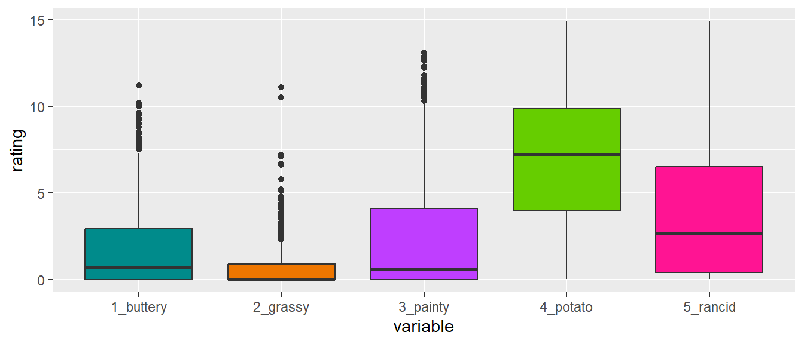
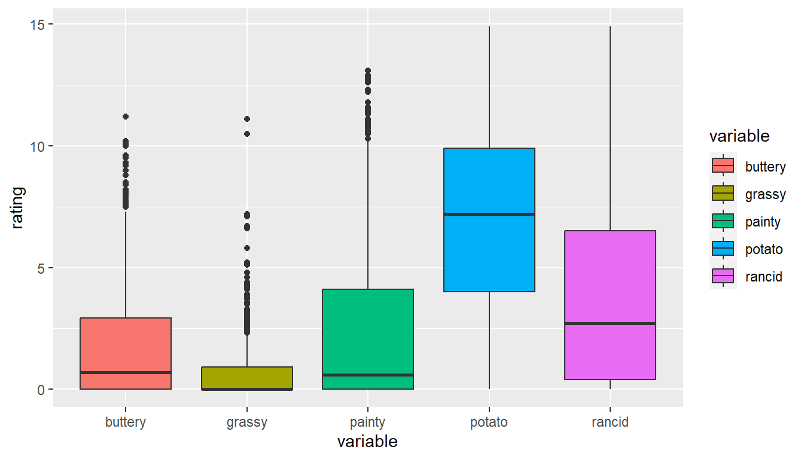

library(ggplot2)ggplot(french_fries) +geom_boxplot(aes(x="1_buttery", y=buttery), fill ="cyan4") +geom_boxplot(aes(x ="2_grassy", y = grassy), fill ="darkorange2") +geom_boxplot(aes(x ="3_painty", y = painty), fill ="darkorchid1") +geom_boxplot(aes(x ="4_potato", y = potato), fill ="chartreuse3") +geom_boxplot(aes(x ="5_rancid", y = rancid), fill ="deeppink") +xlab("variable") +ylab("rating")

Let’s start with Messy (1)
Use pivot_longer and pivot_wider
Tidy your data using pivot_longer
When pivoting longer, you need to specify: - the cols (identifiers) - the names_to (new column name) - the values_to (measures from cols)
ggplot(french_fries_long) +geom_boxplot(aes(x = variable, y = rating, fill = variable))

Long to Wide
In certain applications, we may wish to take a long dataset and convert it to a wide dataset (Perhaps displaying in a table).
time
treatment
subject
rep
variable
rating
1
1
3
1
potato
2.9
1
1
3
1
buttery
0.0
1
1
3
1
grassy
0.0
Tidy your data using pivot_wider
When pivoting wider, you need to specify: - the names_from (column name that we want to widen) - the values_from (measures from column we want to widen)
Assess the ‘messiness’ of the data. List issues that prevent us from working with the data directly. Which of these issues are of type (1) or (2) of messiness?
Problems with the data
Date is text, in the format of Month/Day/Year (Messy 2)
city coordinates are a combination of City name, state, zip code and geographic latitude and longitude. (Messy 2)
expenditure amount is a textual expression, not a number (Messy different)
No Messy 1? - problems of type Messy 1 are typically hard to detect and often up to interpretation/dependent on the analysis to be done.
Your Turn
During the 1870 census data on people’s occupation was collected. The data occupation-1870 contains state-level aggregates of occupation by gender.
Use tidyr to get the data into a long format (use pivot_longer).
Separate the occupation.gender type variable into two variables.
“Spread” (use pivot_wider) the data such that you can draw scatterplots of values for men against women facetted by occupation.
Using the flights data, create a new column Date using lubridate. You will need to paste together the columns year, month, and day in order to do this. See the paste function.
Use dplyr to calculate the average departure delay for each date.